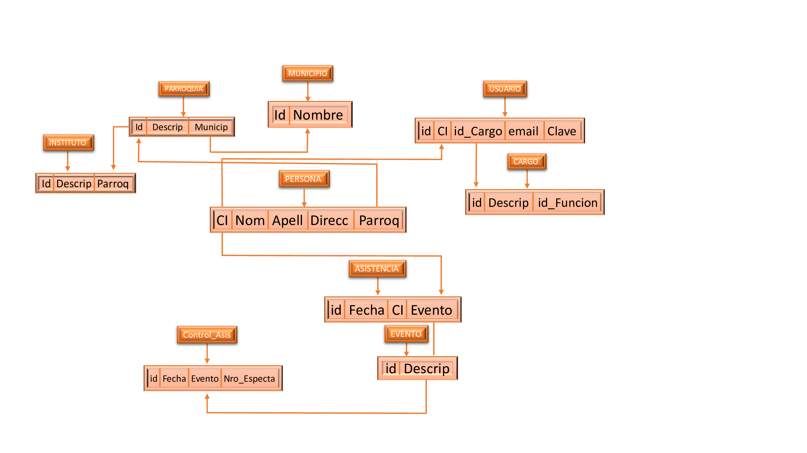
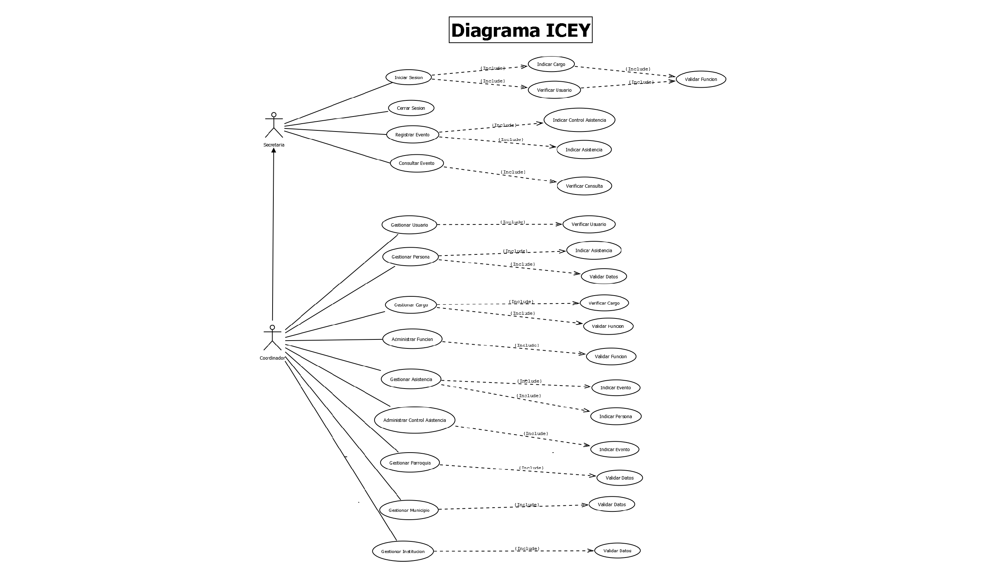

¿Qué es un VPN?
La sigla VPN viene del inglés Virtual Private Network, que en español sería red privada virtual, que, en comparación con otras palabras informáticas, como HTTP, sí nos dan unas pistas precisas sobre hacia qué va el concepto. Para poder conectarte a internet, ya sea por medio de tu móvil, PC, televisión y demás dispositivos, generalmente, se establece una comunicación entre el router o módem que conecta tu espacio de trabajo o tu casa con el proveedor de internet, ya sea alámbrica o inalámbricamente.
El proceso cambia según el dispositivo a través del cual te quieras conectar, pero la esencia es la misma: tu aparato se conecta a otro que le brinda la conexión a internet. Todos los dispositivos que conectas al mismo router que te provee de internet reciben una dirección IP local, otorgada por la compañía que otorga el servicio, la cual no es visible desde internet. La red local hace referencia a todo el conjunto de aparatos que se conectan al mismo router, de tal modo que puedes compartir archivos e impresoras sin necesidad de pasar por internet.
Función de un VPN
Una VPN oculta su verdadera dirección IP al permitirle a la red redireccionarla por un servidor remoto especial, alojado por el proveedor de una VPN. Esto significa que si navega en línea con una VPN, el servidor de la VPN se convierte en la fuente de sus datos. Esto significa que su Proveedor de servicios de internet (ISP) y otros terceros no pueden ver los sitios web que visita o qué datos envía y recibe en línea. Una VPN funciona como un filtro que convierte a todos sus datos en texto incomprensible. Si alguien lograra interceptar su información, de nada le sirve.
Tipos de VPN
La VPN de acceso remoto (Remote Access VPN) permite a los usuarios conectarse a una red privada para acceder a servicios y recursos de forma remota. Esta conexión es segura y se realiza a través de internet mediante un remote access server.
Una VPN site-to-site o de sitio a sitio se utiliza principalmente en las empresas. Las organizaciones con instalaciones en diferentes ubicaciones geográficas utilizan esta VPN para conectar la red de una instalación a la red en otra, y en otra ubicación geográfica.
Relación PSTIV
La creación de una red privada virtual en el instituto del ICEY, permite una inclusión segura de la red de área local (LAN) sobre una red pública o no controlada como es Internet. Esto permitirá un sistema muy eficaz que proteja la comunicación entre dos servidores y evitar que se puedan entrometer en la transferencia de datos entre ambos, cumpliendo asi con una seguirdad optima en cuanto a los datos que se llevan de cada cultor que pertenece a dicho ente gubernamental.
 